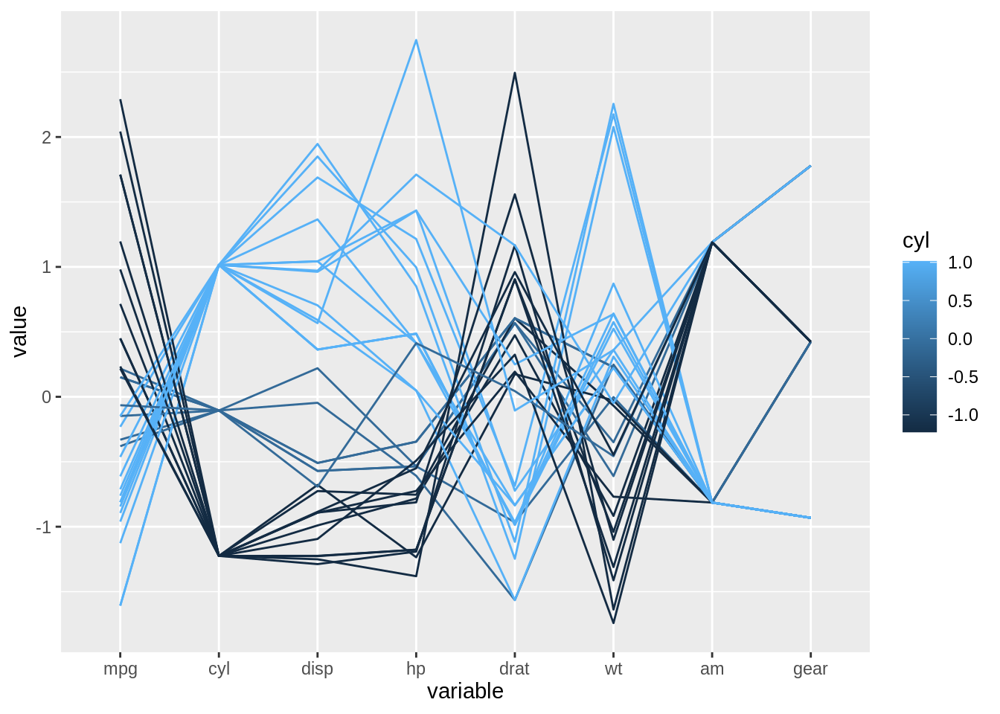
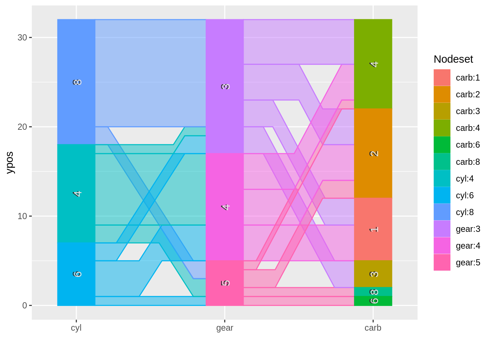
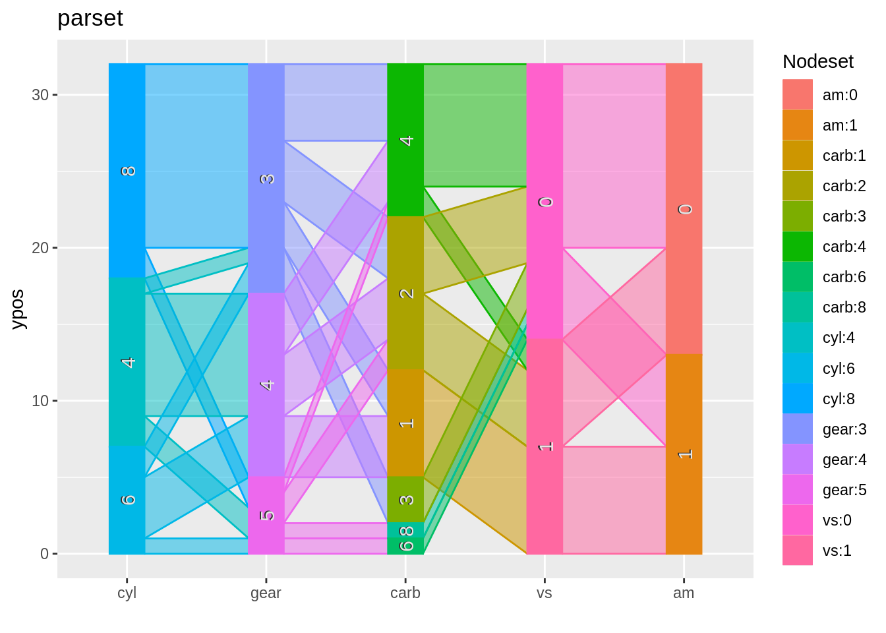

21 Parallel coordinates plot cheatsheet
Andrew Schaefer
This cheatsheet goes over different options and coding techniques for displaying parallel coordinate plots.
21.1 Libraries: GGally, ggparallel, and parcoords
In general, GGally is used for continuous data while ggparallel is useful for discrete data. We’ll start with some beginning examples below. parcoords introduces interactive parallel coordinate plots, which will be explained further below. First, import the libraries
21.3 Method: ggparcoord
As discussed in class, ggparcoord is usually your go-to for parallel coordinate plots. Once the dataset is loaded, you can pass it directly into the method and indicate which columns to show.
## mpg cyl disp hp drat wt qsec vs am gear carb
## Mazda RX4 21.0 6 160 110 3.90 2.620 16.46 0 1 4 4
## Mazda RX4 Wag 21.0 6 160 110 3.90 2.875 17.02 0 1 4 4
## Datsun 710 22.8 4 108 93 3.85 2.320 18.61 1 1 4 1
## Hornet 4 Drive 21.4 6 258 110 3.08 3.215 19.44 1 0 3 1
## Hornet Sportabout 18.7 8 360 175 3.15 3.440 17.02 0 0 3 2
## Valiant 18.1 6 225 105 2.76 3.460 20.22 1 0 3 1
ggparcoord(mtcars)21.3.1 Parameters
Not a very interesting graph right? Let’s slowly add on some useful parameters. Columns can either be a range of column numbers (2:4) or a vector as shown below. groupColumn is for coloring data from a single column (the input will take a column value as a numerical, or the name of the column as a string). If the data is continuous, a gradient will be used.
ggparcoord(mtcars, columns = c(1:6,9,10), groupColumn = 2)
splineFactors curves the lines, which may make trends more visible depending on the data. alphaLines will make the lines transparent, which is prticularly useful for large datasets. It also prevents the colors of different lines from overlapping each other. These parameters will help with visualizing the data.
ggparcoord(mtcars, columns = c(1:6,9,10), groupColumn = 2, splineFactor = 10, alphaLines=0.6)21.3.2 Grouping by features
Discrete data will have their own categorical colors, much like a legend. However discrete data does not fit very well with the rest of the data (see that the scaling is off below). It will be difficult to discern trends between variables.
mtcars$cyl <- as.character(mtcars$cyl)
ggparcoord(mtcars, columns = c(1:6,9,10), groupColumn = 2, splineFactor = 10, alphaLines=0.6)
Luckily we have the option to exclude the discrete data in the column vector (while still using it to group the data).
ggparcoord(mtcars, columns = c(1,3:6,9,10), groupColumn = 2, splineFactor = 10, alphaLines=0.6)21.3.3 Distributions
Boxplots may be used to observe the distribution of the data and identify outliers. shadeBox may be used to color a box between the min and max value behind every column, but a boxplot will achieve the same goal (with more detail and visual appeal too).
Note: the splineFactor parameter may not be used with boxplot or shadeBox
ggparcoord(mtcars,
columns = c(1,3:6,9,10),
groupColumn = 2,
alphaLines=0.7,
boxplot = TRUE)21.3.4 ggplot2 commands
The title parameter may be used alongside with themes to make the graph visually appealing. This includes powerful methods such as facet_wrap. This way can observe the distribution or trend of each category. If the x-axis labels of the plots are “squished” together (especially for datasets with many features), the angle of the text may be adjusted to avoid overlap.
ggparcoord(mtcars,
columns = c(1,3:6,9,10),
groupColumn = 2,
alphaLines=0.7,
boxplot = TRUE
) +
xlab("Car Features") +
ylab("Count") +
theme(axis.text.x = element_text(angle=45, vjust = 1, hjust=1)) +
facet_wrap(~cyl, nrow = 2)21.4 Package/Method: ggparallel
There are ways to introduce discrete data into ggparcoords. But there is a different library with much more flexibility with discrete values. Let’s try out ggparallel
ggparallel(vars = list("cyl", "gear", "carb"), data = mtcars)
Compared to ggparallel, ggparcoord does not tell us much information regarding the discrete variables. This is the main difference. Let’s shift our attention back to ggparallel
ggparcoord(mtcars, columns = c(2,8,9))21.4.1 Methods
As more columns are added, the columns may get “squished” together and it starts looking very busy. We can adjust the width parameter and change the method to get a better view; - angle is the default method - adj.angle is particularly good at dealing with crowded data. - Hammock is just as cluttered as angle but takes up less space visually so it is good for fewer columns of data - parset is similar to angle, but has straight rather than curved wedges. May look more visually appealing depending on the dataset
21.4.2 Parameters
-method: changes view of data (angle, adj.angle, parset, hammock) -alpha: transparency of wedges -width: visual width of each column -ratio: changes the height of the wedges (in conjunction with hammock and adj.angle) -order: changes the order of the categories in each column (based on size of proportion)
ggparallel(vars = list("cyl", "gear", "carb", "vs", "am"), data = mtcars) +
ggtitle("angle")
ggparallel(vars = list("cyl", "gear", "carb", "vs", "am"), data = mtcars, width = 0.15,
method = "adj.angle") +
ggtitle("adj.angle")
ggparallel(vars = list("cyl", "gear", "carb", "vs", "am"), data = mtcars, width = 0.15,
method = "hammock", ratio = 0.3, alpha = 0.3) +
ggtitle("hammock")
ggparallel(vars = list("cyl", "gear", "carb", "vs", "am"), data = mtcars,
method = "parset") +
ggtitle("parset")
More parameters:
-order: changes the order of the categories in each column based on size of proportion (decreasing, increasing, and unchanged order)
-label.size: changes the size of the text in each column
-text.angle: adjusts angle of text within columns
ggparallel(vars = names(mtcars)[c(2,10,11,8,9)], data = mtcars, width = 0.15, order=0,
method = "adj.angle", label.size=3.5, text.angle=0)
ggparallel(vars = names(mtcars)[c(2,10,11,8,9)], data = mtcars, width = 0.15,
method = "adj.angle", label.size=3.5, text.angle=0) +
ggtitle("Car Parts") +
xlab("Car Feature") +
ylab("Amount") +
theme_bw() +
facet_wrap(~carb, nrow=3)21.5 Package and Method: parcoords
Unlike the previous two packages, parcoords allows for interactive parallel coordinate plots. Default graph is below.
parcoords(mtcars)21.5.1 Interactive parameters
-reorderable (T or F): allows the columns to be moved around -brushMode: allows for filtering in each column of the dataset (options include 1D-axes, 1D-axes-multi, or 2D-strums). The main difference between these is 1D axes filters on columns, and 2D strums filters between columns -alphaOnBrushed: when brushing, makes filtered-out lines visible (useful when looking for lines while brushing) -brushPredicate: logical “and” or “or” on multiple brush filters (default is “and”)
library(d3r)
parcoords(mtcars,
brushMode = "1D-axes",
alpha=0.5,
reorderable = T,
withD3 = TRUE,
color = list(
colorScale = "scaleOrdinal",
colorBy = "cyl",
colorScheme = c("blue","green")
)
)
parcoords(mtcars,
reorderable = T,
brushMode = "2D-strums",
alphaOnBrushed = 0.15,
brushPredicate = "or"
)21.5.2 Color parameter
This parameter takes in a list (which can contain colorScale, colorBy, colorScheme, etc). Since most of the data will include continuous variables, ensure you install and import the library “d3r”, or the graph will get an error
- set withD3 = TRUE when using the color parameter
21.6 Ending Notes and Analysis:
21.6.1 ggparcoord (GGally)
- can display continuous and discrete data, though best with continuous
- can compare distributions between features
- utilizes ggplot2 commands
- has the most flexibility out of the 3 methods